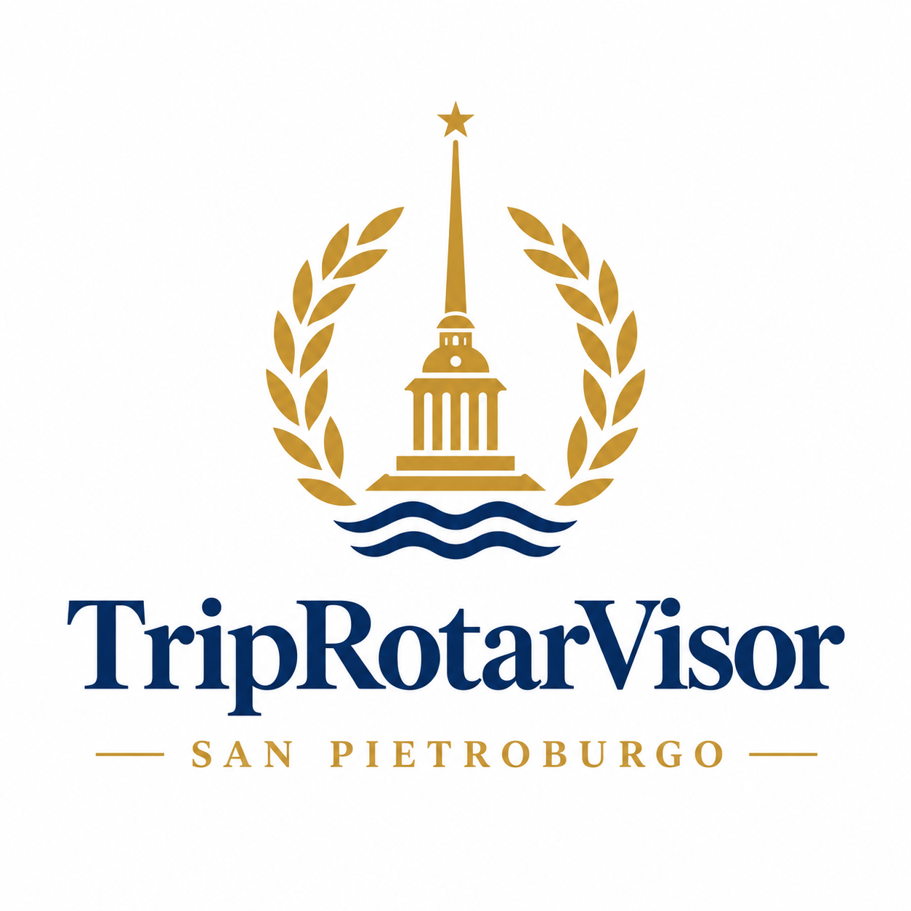
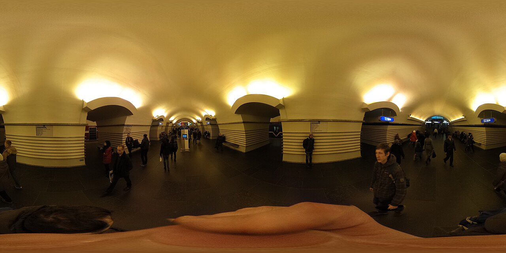
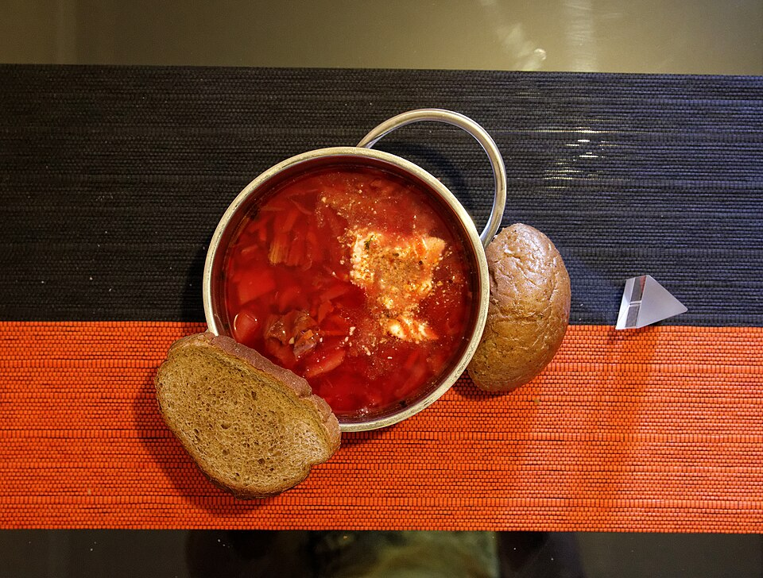
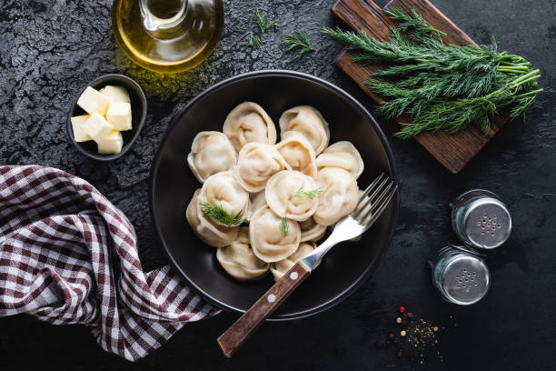
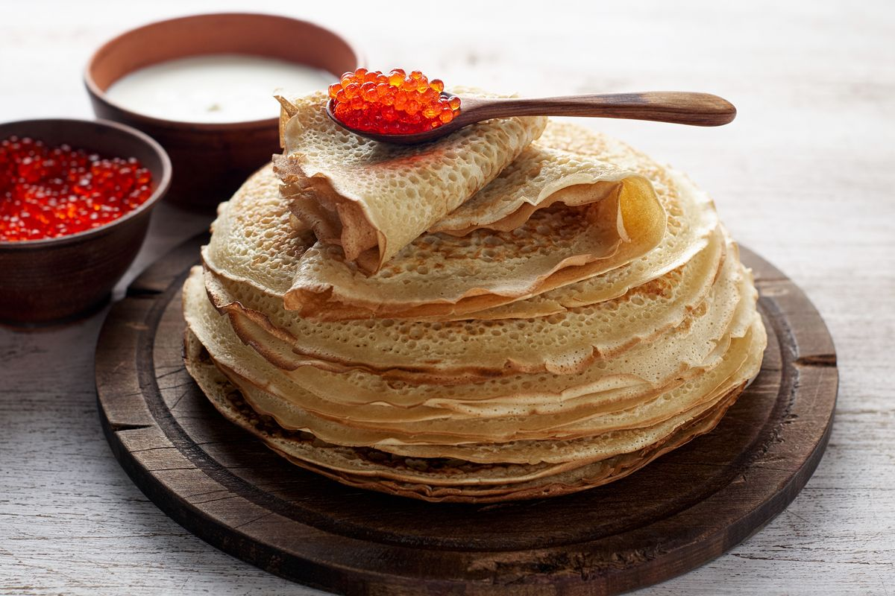

La Venezia del Nord

Il centro di San Pietroburgo si può attraversare a piedi, e questo è il punto a partire da: se l'albergo è vicino alla Neva, la mattina si comincia con i musei e la sera si torna a piedi. Gli hotel e i ristoranti qui sotto esistono davvero: cliccando sul nome si apre il sito ufficiale. I prezzi cambiano con la stagione, quindi le fasce sono indicative.
| Locale | Zona | Fascia |
|---|---|---|
| Grand Hotel Europe | Via Michajlovskaja 1/7, sul Nevskij | alta (lusso a 5 stelle) |
| Corinthia San Pietroburgo | Prospettiva Nevskij 57 | alta (5 stelle) |
| Pushka Inn | Argine della Moika 14 | media (boutique a 4 stelle) |
Attenzione solo a una cosa: gli ostelli russi hanno una regola che in Italia non esiste, e cioè che le scarpe vanno tolte quando si entra in camera. Sembra una sciocchezza, ma all'inizio è scomodo.
La cucina russa è pesante, di patate e di burro, e nei ristoranti del centro i piatti tipici si trovano quasi tutti. Se siete in compagnia, l'abitudine è ordinare da condividere e mettere tutto in mezzo al tavolo.



| Ristorante | Cosa si mangia | Zona |
|---|---|---|
| Palkin | cucina imperiale russa, dal 1785 | Prospettiva Nevskij 47 |
| Russkaya Ryumochnaya n. 1 | cucina russa, con museo della vodka | Viale Konnogvardejskij 4 |
| Teplo | cucina casalinga russa ed europea | Via Bolshaya Morskaya 45 |
Un'ultima informazione pratica: nei ristoranti, il conto si chiama "schet" e va chiesto esplicitamente, perché se aspettate che arrivi da solo non arriva. Le mancie, invece, si lasciano sempre e senza vergogna: il dieci per cento del conto è la norma.